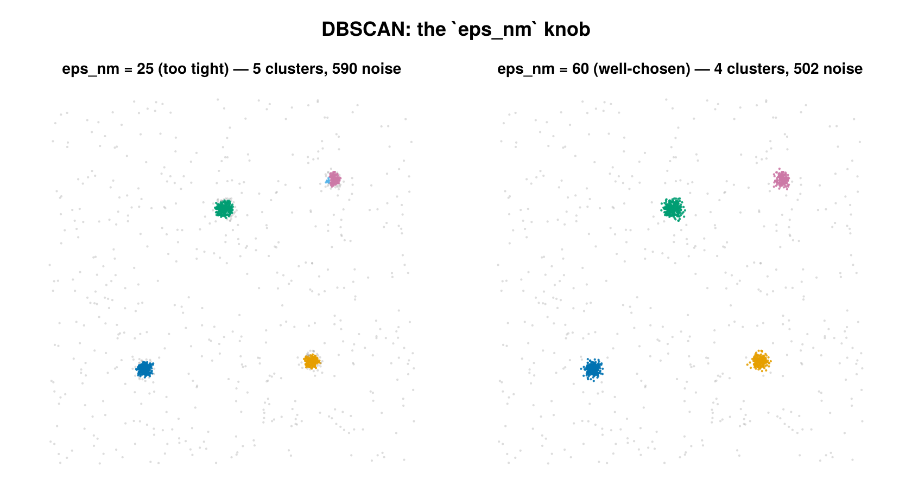

DBSCAN
DBSCAN (Density-Based Spatial Clustering of Applications with Noise) labels each SMLM localization as belonging to a cluster or as noise based on local point density. It is a cluster labeling backend selected by passing a DBSCANConfig, and is backed by Clustering.dbscan from Clustering.jl. The call cluster(smld, cfg::DBSCANConfig) deep-copies the input emitters, writes a per-emitter label into emitter.id (0 = noise, 1..K = cluster), and returns (smld_out, ClusterInfo).

The same field labeled with eps_nm too tight (left — the top-right cluster fragments and more points fall to noise) vs. well-chosen (right). Noise (id = 0) is gray.
Concept
DBSCAN groups points that lie in dense neighborhoods and discards sparse points as noise. It needs two parameters: a neighborhood radius eps_nm (ε) and a count min_points. A point is a core point when at least min_points localizations fall within ε of it. Core points that are within ε of one another are stitched together into the same cluster; non-core points that sit within ε of a core point are pulled in as border points; everything else is noise. DBSCAN does not require the number of clusters up front, finds arbitrarily shaped clusters, and labels low-density localizations as noise rather than forcing them into a cluster.
This backend is the package's recommended default for general clustering: it scales to large datasets (KD-tree neighbor queries, no O(n²) pairwise-distance matrix), and it works in both 2D and 3D.
How it works
Let $P$ be the set of localization coordinates in a group and $\mathrm{dist}(p,q)$ the Euclidean distance between two points. With radius $\varepsilon$ and threshold $m = \texttt{min\_points}$:
The ε-neighborhood of a point $p$ is
\[N_\varepsilon(p) = \{\, q \in P : \mathrm{dist}(p, q) \le \varepsilon \,\}.\]
A point $p$ is a core point iff its ε-neighborhood is large enough:
\[|N_\varepsilon(p)| \ge m.\]
A point $q$ is directly density-reachable from a core point $p$ when $q \in N_\varepsilon(p)$. A point is density-reachable from $p$ if it is connected to $p$ through a chain $p = p_1, p_2, \dots, p_k = q$ in which each $p_{i+1}$ is directly density-reachable from the core point $p_i$. Two points are density-connected if both are density-reachable from a common core point. A cluster is then a maximal set of mutually density-connected points — the connected core points plus their reachable border points. Points that are neither core nor reachable from any core point are noise.
Units and the metric the code uses
Emitter coordinates on AbstractEmitter subtypes are stored in microns, but eps_nm is given in nanometers. The backend converts once, up front:
\[\varepsilon_{\mu m} = \frac{\texttt{eps\_nm}}{1000}.\]
Clustering is then performed directly on the micron coordinate matrix, so the neighborhood test is the Euclidean distance $\le \varepsilon_{\mu m}$ in micron space. Neighbor queries use a KD-tree (the Clustering.dbscan default), which is what gives the backend its sub-quadratic scaling.
2D vs 3D
The coordinate matrix is built from (x, y) when use_3d = false and from (x, y, z) when use_3d = true. In 3D the same scalar radius $\varepsilon_{\mu m}$ is applied isotropically across all three axes (the neighborhood is a sphere, not an ellipsoid). use_3d = true requires 3D emitters (e.g. Emitter3DFit); a 2D emitter type raises an error because it has no z field.
Configuration
DBSCANConfig <: AbstractClusterConfig. Construct it with keywords; eps_nm is required, the rest take the defaults below.
| field | default | unit | meaning |
|---|---|---|---|
eps_nm | (required) | nm | neighborhood radius ε; converted to microns internally ($\varepsilon_{\mu m} = \texttt{eps\_nm}/1000$). Must be > 0. |
min_points | 5 | count | minimum points in an ε-neighborhood for a point to be a core point (classical DBSCAN minPts); also the minimum cluster size. Must be ≥ 1. |
use_3d | false | — | cluster in (x, y, z) when true (requires 3D emitters), otherwise in (x, y). |
per_dataset | true | — | when true, cluster within each dataset index independently so (dataset, id) uniquely identifies a cluster in a multi-dataset SMLD; when false, all emitters are clustered together and id alone identifies the cluster. |
remove_unclustered | false | — | when true, emitters tagged as noise (id == 0) are dropped from the returned SMLD. |
The last four fields (min_points, use_3d, per_dataset, remove_unclustered) are the shared fields carried by every backend config; only eps_nm is specific to DBSCAN.
using SMLMClustering
# `smld::SMLMData.BasicSMLD` is your localization set (coordinates in microns).
cfg = DBSCANConfig(
eps_nm = 50.0, # neighborhood radius in nm (required)
min_points = 5, # core-point threshold / minimum cluster size
use_3d = false, # set true for (x, y, z) on 3D emitters
per_dataset = true, # cluster each dataset independently
remove_unclustered = false, # keep noise (id == 0) in the output
)
smld_out, info = cluster(smld, cfg)
println(info) # ClusterInfo summary
println("clustered ", info.n_clustered, "/", info.n_locs_in,
" into ", info.n_clusters, " clusters; ", info.n_noise, " noise")
# Per-emitter labels live on emitter.id (0 = noise, 1..K = cluster id).
labels = [e.id for e in smld_out.emitters]Output & interpretation
cluster returns a 2-tuple (smld_out, info):
smld_out::BasicSMLD— a deep copy of the input with cluster labels written onto eachemitter.id. The inputsmldis never modified.id == 0marks noise;id ∈ 1..Kmarks the cluster the emitter belongs to. Whenper_dataset = true, ids are local to each dataset, so the pair(dataset, id)is what uniquely identifies a cluster across the SMLD. Whenremove_unclustered = true, noise emitters are dropped and only clustered emitters remain.info::ClusterInfo— the run summary, withalgorithm = :dbscan:
| field | type | meaning |
|---|---|---|
n_locs_in | Int | number of input localizations |
n_clustered | Int | localizations assigned to a cluster (id > 0) |
n_noise | Int | localizations tagged as noise (id == 0); equals n_locs_in - n_clustered |
n_clusters | Int | number of distinct clusters formed |
cluster_sizes | Vector{Int} | size of each cluster, indexed by cluster id (cluster_sizes[k] is the size of cluster k); length == n_clusters |
algorithm | Symbol | :dbscan |
elapsed_s | Float64 | wall-clock time of the cluster call, in seconds |
Read n_noise as the count of localizations DBSCAN judged too sparse to belong to any cluster (raise eps_nm or lower min_points to recover more of them). Read cluster_sizes as the per-cluster member counts in cluster-id order; with per_dataset = true it concatenates the surviving clusters across datasets in sorted-dataset order, so its length is the total cluster count, not a per-dataset count.
Notes & caveats
- Scaling. Neighbor queries run on a KD-tree, so there is no O(n²) pairwise-distance matrix and no corresponding memory blow-up. This is the reason DBSCAN is preferred over the hierarchical backend for groups with many thousands of localizations.
min_pointssemantics. The same value sets both the core-point threshold and the minimum cluster size: a candidate cluster whose final membership is belowmin_pointsis dropped (its points become noise).min_pointsmust be≥ 1;eps_nmmust be> 0. Both are validated at the start of the call and raiseArgumentErrorotherwise.- Boundary points / counting source of truth. Sizes and labels are recounted from
Clustering.jl's per-pointassignments(last-writer-wins, each point assigned exactly once), not from itscounts. A boundary point that touches two clusters is counted in both clusters'counts, so summingcountscan exceed the point count and inflate sizes; the backend avoids this by usingassignments, then compact-relabels the survivors1..Kwithin each group so the reportedcluster_sizesstay consistent with the written labels. - 2D vs 3D. Both are supported. 3D needs emitters that carry a
zfield; otherwise an error is raised. - Per-dataset grouping. With
per_dataset = true, datasets are processed in sorted index order and cluster ids restart from1in each dataset. Empty groups are skipped. - Duplicates. DBSCAN imposes no exact-duplicate-coordinate guard; coincident
(x, y)(or(x, y, z)) localizations are clustered normally. This is unlike the Voronoi/MRF backends, which raiseArgumentErroron duplicate generators.
References
- M. Ester, H.-P. Kriegel, J. Sander, and X. Xu, "A Density-Based Algorithm for Discovering Clusters in Large Spatial Databases with Noise," Proceedings of the 2nd International Conference on Knowledge Discovery and Data Mining (KDD-96), AAAI Press, 1996, pp. 226–231.
- Implementation backend: Clustering.jl (
Clustering.dbscan).